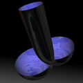

GeometrieWerkstatt Gallery
CMC Surfaces
Delaunay Surfaces
Roulettes

Bubbletons
Bifurcating Nodoids
Smyth Surfaces
Perturbed Delaunay
Perturbed Delaunay Surfaces
Constant mean curvature cylinders in euclidean 3-space
Perturbed Delaunay surfaces with one Smyth end and one Delaunay end.
A cylinder with a Delaunay and a Smyth end.